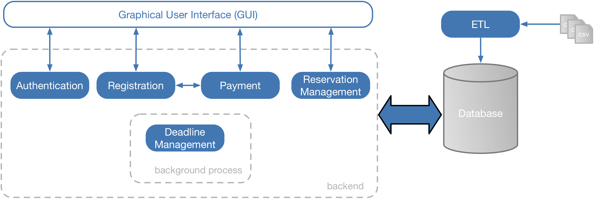
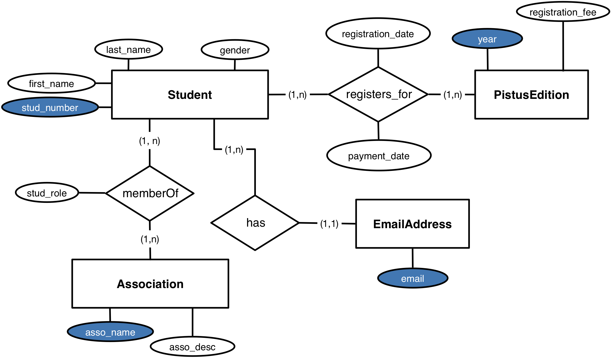

"Pistus" (short for "Piston Ski") is an event organised by WACS (Winter
Association CentraleSupélec) during
the winter holidays every year. It's an awesome week-long mountain trip involving many
activities (including skiing, snowboarding, raclette binges and parties, just
to name a few).
Since the event cannot accommodate all CentraleSupélec students, the organizers
must cap the number of participants to the first 300 registered students.
When a student wants to register for the Pistus, the organizers will write
the student personal data in a Excel file, as well as the registration date and the amount
that is due by the student.
Upon registration, students have the option to pay
immediately or later; in any case, the student must pay within 5 days of the registration,
otherwise the registration is cancelled. The organizers will send a reminder by email 2 days before the deadline.
Once the student pays, the organizers will write to the Excel file the payment date.
The organizers keep two Excel files. One contains
all the data of each registration, i.e.,
the student number, first and last name, gender and email addresses
of the registered student, as well as the registration and payment dates, the
registration fee and the year of the event. [Show the Excel file].
The other Excel file contains the association membership information
on the students [Show the Excel file].
In these files, only the associations exist in the real world.
The names of the students have been randomly generated from
a list of french first and last names. These files do not contain any reference to actual students in the school.
This organization presents a lot of issues:
If students participate to several editions of Pistus in different years, their data is replicated
for each registration. This might lead to redundancies, as well as inconsistent data.
The organizers must manually check whether a student meets the payment deadline.
The organizers must manually send email reminders to the students.
For this reason, we want to develop a software, called
PistusResa, that the organizers can use to manage the registrations in an efficient way.

The architecture of PistusResa.
The architecture of PistusResa is shown in Figure 1. The software consists of a graphical user interface (GUI)
that allows an organizer to access all the functionalities.
The backend consists of five modules, each dedicated to a specific functionality:
The Authentication module allows an organizer to get access to the functionalities of PistusResa.
The Registration module allows an organizer to sign up a student for a specific Pistus edition.
The Payment module allows an organizer to register the payment of a student.
The Reservation Management module allows an organizer to manage the reservations.
The Deadline Management module is a background process that checks the payment deadlines,
sends email reminders and removes the registrations that do not comply with the
payment deadline.
PistusResa uses a relational database to store all the necessary
data regarding the registrations.
An additional module, named ETL (meaning Extract, Transform, Load), is used to import into the database the data on the past Pistus editions that are kept in the two
spreadsheets mentioned above.
Conventions Used in This Lab Assignment
The following typographical conventions are used in this lab assignment:
This icon denotes tips or general notes, something to pay attention to.
This icon denotes an action that you need to take before going further.
This icon denotes a point that you might want to discuss with your lab
supervisor.
This icon denotes tests that you have to make on your code.
This icon denotes a link to documentation that you should read to
understand how to code the subsequent exercises.
Project Initialization
Open Visual Studio Code (VSC) and select File → Open; in the pop-up window that appears,
click on the button labelled New Folder and create a new folder called pistus.
Click on the button Open; a new window should appear that has on the left side a menu called
Explorer that lets you see the files in your projects.
You should see a project named PISTUS with no files.
Change the file encoding of your text editor to UTF-8 [Tell me how].
If you use Windows or Linux, select File → Preferences → Settings;
If you use MacOS, select Code → Preferences → Settings.
In the panel that appears, select the tab Folder and the newly folder pistus,
click on Text Editor in
the left-side menu and then select Files; on the right side of the panel scroll down to
the option Encoding and select the value utf8.
Since PistusResa is a fairly complex software with several components,
putting all code into a single file would be a bad idea.
Instead, we will organize the code into several packages,
which will ease its development and maintenance [What is a package?].
A package in Python is a collection of modules, a module is defined
as a file with extension .py containing Python code.
In order to create a package, you have to create a folder under your project containing
a special file named __init__.py.
The purpose of this file is to include optional initialization code.
For the moment, we will leave that file empty.
Our first lines of code will create the tables of the
PistusResa database.
We'll put that code in a module contained in a package named db.
Go to the Explorer, right-click on the name of your project and select
New Folder.
How to Run a Python script.
The easiest way to run a Python script in VCS is to use the terminal.
You can open one by selecting Terminal → New Terminal.
When the terminal is open you can type commands in it.
If you type the command pwd, you'll get the current working directory.
If you need to change directory, you can do so by typing the command cd followed
by the name of the directory to which you want to go.
When you want to execute a Python script, you have to move to the directory that contains the
script and type the following command:
python script.py
The Database
The database of PistusResa is intended to keep data on the students that register
for the Pistus.
Students are identified by a student number and have a first and family name, gender
and email addresses (a student can have more than one).
A student can belong to one or more associations; each association is
described by a name (unique) and a textual description of its activities.
Any student has a specific role in an association (e.g., president, secretary, member).
When a student registers for the Pistus, the year of the event,
the registration and the payment date are stored, as well as the amount paid.
The registration date and the payment date might be different.
Importantly, a student can participate to different Pistus editions in different years, but cannot
register twice for the same edition.
Database Design
The ER model of the database of Pistus is shown in Figure 2.

The logical data model of the database of PistusResa.
We need to derive the corresponding
physical data model, that consists of the collection of relational tables
that are part of the database [How to derive a physical model].
Rules to translate a logical data model into a physical data model:
For each one-to-many relationship between two entities \(A\) and \(B\).
Take the set \(K_B\) of attributes composing the primary key of \(B\)
and add it to the attributes of \(A\).
The new attributes of \(A\) will be a foreign key referencing the primary
key of \(B\).
For each many-to-many relationship R between two entities \(A\) and \(B\).
Create a new entity whose attributes are: all the attributes of \(R\),
the set \(K_A\) of attributes composing
the primary key of \(A\) and the set \(K_B\) of attributes composing the
primary key of \(B\).
The primary key of the new entity is composed of all attributes in \(K_A \cup K_B\).
The attributes in \(K_A\) (respectively, \(K_B\)) will be a foreign key referencing the corresponding
attributes in \(A\) (respectively, \(B\)).
For each entity in the ER diagram: create a relational table.
The attributes of the entity become the columns of the table.
Translate the ER diagram into a collection of
relational tables.
For each table, specify the primary and foreign keys.
For each column, specify its type.
Once the database design is in place, we need to create the actual database
in a Relational Database Management System (RDBMS).
Database Creation
If you could successfully install MySQL on your computer, you can use it as
the RDBMS of PistusResa [Click here to continue].
In order to make a Python program communicate with a MySQL server, you need to install the
Python package mysql-connector [Show me how].
Open a terminal in Visual Studio Code by selecting Terminal → New Terminal;
then type the following command:
pip install mysql-connector
By using the MySQL connector, we can write Python code to connect to a MySQL server, create a new database,
create the tables and insert the data into the tables.
Make sure that an instance of MySQL server is running on your computer.
Create a new file create_database.py under the package db.
Click here to open the documentation
of MySQL Connector/Python. You will need it to do the exercises of this section.
Connecting to the MySQL server. The first step consists in connecting your Python program to the
instance of the MySQL server running
on your computer.
In the file create_database.py, write the code to connect to the
instance of the MySQL server running on your computer.
Creating a new database. Once the connection is established, we need to create the new
database for PistusResa.
In the file create_database.py, add the code to create a database
named pistus. Execute the code.
Open the MySQL Workbench and verify that the new database
has actually been created.
Creating the tables. After the creation of the database,
we need to create the tables composing the database itself.
In the file create_database.py, add the code to create all the tables in the database
pistus. For each table, specify the primary and foreign keys. Execute the code.
Open the MySQL Workbench and verify that the tables have actually been created.
If you couldn't successfully install MySQL, you can use SQLite [Click here to continue].
SQLite is a software library written in C that implements a RDBMS.
SQLite does not need you to install a server. You just need to import the library into your application
and call its functions to create tables and insert and query data.
The database will be a simple binary file stored in
your computer.
In order to make a Python program communicate with a SQLite database, you need to install the
Python package sqlite3 [Show me how].
Open a terminal in Visual Studio Code by selecting Terminal → New Terminal;
then type the following command:
pip install sqlite3
Create a new file create_database.py under the package db.
Click here to open the documentation
of sqlite3. You will need it to do the exercises of this section.
Creating a new database. Since SQLite is not a server, you do not need to create any connection.
You can directly create a new database.
In the file create_database.py, add the code to create a database
named pistus. Execute the code.
The code should create a file named pistus.db in the same directory as
the file create_database.py.
Creating the tables. After the creation of the database,
we need to create the tables composing the database itself.
In the file create_database.py, add the code to create all the tables in the database
pistus. For each table, specify the primary and foreign keys. Execute the code.
If you want to verify that your tables have been successfully created, you can
download and install the DB Browser for SQLite.
This will provide you a graphical interface to any SQLite database. After the installation,
just open the program, click on Open Database and select the file pistus.db.
If everything is OK, you should see the tables that you've just created.
The ETL Module
As explained in the introduction, for the past editions of Pistus
the organizers had kept all the registration data in two spreadsheets;
we now want to load all these data into the Pistus database.
The ETL module is responsible for
extracting the data from the spreadsheets,
transforming and loading them into
the database.
In order to ease the automatic process of the spreadsheets by a Python program, we
converted them into CSV files [What are
CSV files?].
Unlike a spreadsheet, which is a binary file and needs a specific application (Microsoft Excel or equivalent)
to be read, a CSV file (short for comma-separated values)
is simply a plain-text file that can be opened with any text editor.
Any application that can read a spreadsheet provides a way to save it as a CSV file.
A CSV file has as many rows as the original spreadsheet; each row is a sequence of values,
separated by a special character, called the separator, or delimiter
(typically, a comma or
a semi-colon), that acts as a column delimiter.
Since a CSV file is plain-text, reading a CSV file from a Python application
is way easier than reading directly a spreadsheet.
In your project PISTUS, create a new folder named data.
When you click on the above links, the CSV files will be downloaded to the Downloads folder of
your computer. Simply drag them into the data folder in the Explorer panel of VSC.
You can see the content of these files by simply clicking once on them in the
Explorer panel.
In both files, the separator is the semi-colon (;).
The file student_registrations.csv contains the data
on the registration to the Pistus in the years 2016, 2017, 2018.
The file student_membership.csv contains the data on the affiliation of the students to
the different associations.
If you fiddle with the files, you will immediately notice that many data are replicated;
first and last names and the email addresses of a student, for instance, occur in both files.
Moreover, these data present some variability that is undesired when we intend to
process them through a software application:
The gender is expressed in different ways (e.g., female are alternatively identified by F,
W and fille).
Different formats are adopted for dates (e.g., DD/MM/YYYY, YYYY/MM/DD).
Different formats are adopted for expressing registration fees (e.g., 20,5e, 20,5 euros).
In some cases, the registration fee is a numeric value, in some other cases it might contain some
characters from the alphabet. If we try to import these values into a Pyhton program and convert them into
a float, we would get errors.
Some students appear multiple times in both files (e.g., Ericka GUYOMARD in the file student_registrations.csv),
because they participate to several Pistus editions or belong to more than one association.
All these anomalies in the data are referred to as noise; virtually all
datasets present a certain amount of noise, that must be addressed before using the data.
In other words, we need to clean the data before loading them into the database.
We're now going to develop the ETL module step by step.
Create a package named etl in your project. Don't forget to
create the file __init__.py in the package!
The ETL module consists of three submodules:
The Extraction (E) submodule. It extracts the content of the CSV files and organizes it into
several in-memory data structures.
The Transformation (T) submodule. It makes the data comply with certain requirements, in particular it cleans the
data from the noise.
The Load (L) submodule. It loads the transformed data into the database.
The Extraction Submodule
If you correctly designed your database, each table should contain data on entities
of a specific type (e.g., a student, an association).
In the two input files, however, the data on the different entities are all mixed up
in the same table.
For example, in student_registrations.csv
the personal data of the students (e.g., their gender) occur in the same table
as the data on the Pistus editions (e.g., the registration fee).
The Extraction submodule extracts the content of the input CSV files and
organizes the data on the different entities into separate data structures.
For each table in the database (e.g., the table Student),
the submodule creates a list where each item is a row of that table,
describing one of the entities (e.g., a student) of the table.
The first choice that we need to make is how to represent a row in the list.
In fact, representing a row as a mere string, like in the CSV file, would not allow for an easy access
to the values of the columns.
Which data structure would you choose to represent a row? [Show the answer].
Different solutions are possible:
An object. We can represent the entity described by a row as an instance of a class.
A list. Each item of the list is a column value in the row.
A tuple. Same as a list.
A dictionary. Each item of the dictionary is a key-value pair, where the key is the name of the
column associated to its value.
Any of these solutions is a viable option. We're going to opt for the first one, which means that
we will have to define a class for each type of entity stored in the database (e.g, student, association).
The reason why we choose the first option is twofold:
The functions transforming the values in the Transformation submodule will be coded directly in the
classes where the values are.
You need to practice the object-oriented notions ☻.
Definition of the data structures.
We are now going to define the data structures to represent the data to be transformed and loaded into the
database.
Create a file extraction.py in the etl package.
Click here to open
the guide to object-oriented programming in Python.
For each table in your database, create, in file extraction.py,
a class with the same name as the table. Each class defines the properties of an entity
contained in the corresponding table. [Example].
If your database defines a table called Student,
you should create a class named Student, whose fields are the columns of the namesake table.
Each instance of the class Student will correspond to a row in the table.
Data Extraction. We are now going to extract the data from the input CSV files
and, for each table in the database, create a list that holds the content of the table.
An item in any of these lists will be an instance of the class describing a row stored in the
corresponding table [Example].
If your database defines a table called Student, the Extraction submodule needs to create a
list, where each item is an instance of the class Student describing a row in the namesake table.
Click here to open the documentation on CSV files.
In file extraction.py, write a function named extract defined by the following
signature:
$$
extract(student\_registrations, student\_membership): (list_1, list_2, \ldots, list_n)
$$
Input of the function:
\(student\_registrations\). The file student_registrations.csv.
\(student\_membership\). The file student_membership.csv.
Output of the function:
A tuple \((list_1, list_2, \ldots, list_n)\), where \(n\) is the number of tables in
your database, and \(list_i\) is the list containing the rows of the \(i\)-th table.
The order of the tables is purely alphabetical, that is: Association,
EmailAddress, Membership, PistusEdition,
Registration, Student.
All values extracted from the CSV files will be treated as strings.
In file student_registrations.csv, the registration of a student
to a specific Pistus edition never occurs more than once. In other words, there will never be two
rows for the registration of student 8298259 to the Pistus edition 2016.
In file student_membership.csv, the membership of a student
to a specific association never occurs more than once.
Data on a specific student, association and Pistus edition are replicated
many times in the two CSV files.
You should make sure that you don't have duplicates in the lists that hold these data.
Check with your lab supervisor the best strategy to avoid duplicates in
a list.
You're now going to check whether your function returns the
expected result by using a unit test.
To this extent, create a file named extraction_test.py in the package etl
and paste the code below:
import unittest
from extraction import extract
class TestExtract(unittest.TestCase):
def test_Extract(self):
(associations, email_addresses, memberships, \
pistus_editions, registrations, students) = extract("../data/student_registrations.csv", "../data/student_membership.csv")
self.assertEqual(len(associations), 11, "The number of associations should be 11")
self.assertEqual(len(email_addresses), 910, "The number of email addresses should be 910")
self.assertEqual(len(memberships), 895, "The number of memberships should be 895")
self.assertEqual(len(pistus_editions), 3, "The number of Pistus editions should be 3")
self.assertEqual(len(registrations), 900, "The number of registrations should be 900")
self.assertEqual(len(students), 602, "The number of students should be 602")
if __name__ == '__main__':
unittest.main()
In the terminal, run the following command (make sure you're in directory etl to run
the command):
python extraction_test.py
Check the result of the test and correct your function extract if needed.
The goal of the transformation submodule is to clean the extracted data
from the noise.
Four attributes need to be cleaned: the gender, the registration fee, and the
registration and payment dates.
Cleaning the values of gender.
The attribute gender in the input file student_registrations.csv
takes the following values:
For males: M, H and garçon.
For females: F, W and fille.
Write a function clean_gender that changes the value to
M or F depending on whether the gender refers to a male or a female.
Where would you define this function?
Think of where you defined the attribute gender.
Create a file cleaning_test.py and define a unit test for
the function clean_gender.
Cleaning the values of registration_fee.
In the file student_registrations.csv, a registration fee can be expressed as:
A numeric value. Only a number is specified. Two cases are possible:
The decimal separator is a comma (e.g., 20,5).
The decimal separator is a point (e.g., 20.5).
An alphanumeric value, typically a number followed by
a textual suffix. Between the number and the suffix
there might be a space. The suffix can be one of the following:
e, such as in 20.5e and 20.5 e.
E, such as in 20.5E and 20.5 E.
euro, such as in 20.5euro and 20.5 euro.
euros, such as in 20.5euros and 20.5 euros.
Write a function clean_registration_fee
that converts the value of the registration fee to a Python floating number.
Where would you define this function?
Think of where you defined the attribute registration_fee.
In the file cleaning_test.py define a unit test for
the function clean_registration_fee.
Cleaning the dates.
In the file student_registrations.csv,
a (registration or payment) date might be expressed in the following formats:
month (in english) DD, YYYY (e.g., December 20, 2015).
DD month (in french) YYYY (e.g., 20 décembre 2015).
Write a function clean_date defined by the following
signature:
$$
clean\_date(old\_date): new\_date
$$
The input of the function is a date in one of the formats specified above;
the output of the function is a date in the format YYYY/MM/DD.
The input old_date is a string value.
The output new_date is an instance
of the class datetime.date.
If the string representing the value of the old_date has
length 0, then the function must return None.
Where would you define the function clean_date?
Think of where the attributes registration_date and payment_date
are defined.
You should consider using a class method.
In the file cleaning_test.py define a unit test for
the function clean_date.
Write two functions clean_registration_date
and clean_payment_date that clean the registration and payment dates
by using the function clean_date defined previously.
Where would you define these functions?
Think of where you defined the attributes registration_date and payment_date.
Loading Data into the Database
It's now time to import the data from the CSV files into the database.
Create a new file named data_loading.py in the package
etl. You'll define the functions demanded by Exercises 8 through 14 in this file.
In order to load data into the database, click here to open the documentation
of MySQL Connector/Python (if you use MySQL) or here
to open the documentation of how to use SQLite.
Write a function
import_associations() defined by the following signature:
$$
import\_associations(cursor, list\_associations)
$$
The input of the function is the cursor object
that you use to connect to the database and
the list of associations returned by the function
extract defined in Exercise 3.
Write a function
import_students() defined by the following signature:
$$
import\_students(cursor, list\_students)
$$
The input of the function is the cursor object
that you use to connect to the database and the list of students returned by the function
extract defined in Exercise 3.
Write a function
import_email_addresses() defined by the following signature:
$$
import\_email\_addresses(cursor, list\_email\_addresses)
$$
The input of the function is the cursor object
that you use to connect to the database and the list of email addresses returned by the function
extract defined in Exercise 3.
Write a function
import_pistus_editions() defined by the following signature:
$$
import\_pistus\_editions(cursor, list\_pistus\_editions)
$$
The input of the function is the cursor object
that you use to connect to the database and the list of Pistus editions returned by the function
extract defined in Exercise 3.
Write a function
import_memberships() defined by the following signature:
$$
import\_memberships(cursor, list\_memberships)
$$
The input of the function is the cursor object
that you use to connect to the database and the list of memberships returned by the function
extract defined in Exercise 3.
Write a function
import_registrations() defined by the following signature:
$$
import\_registrations(cursor, list\_registrations)
$$
The input of the function is the cursor object
that you use to connect to the database and the list of registrations returned by the function
extract defined in Exercise 3.
We now wrap everything up and we write the code to call the functions defined in the Exercises
9 through 14 and import the data.
At the end of the file data_loading.py, write the following code:
if __name__ == '__main__':
The Python interpreter will run the code that follows this instruction
when you execute the script data_loading.py.
You'll write the code demanded in Exercise 14 after this instruction.
Write the Python code to:
Connect to the Pistus database.
Call the function extract defined in Exercise 3 to extract the data from the
input CSV files.
Clean the data by using the functions defined in Exercises 4, 5 and 7.
Load the data into the database by using the functions defined in Exercises 8 through 13.
Verify that the data is correctly loaded into the Pistus database.